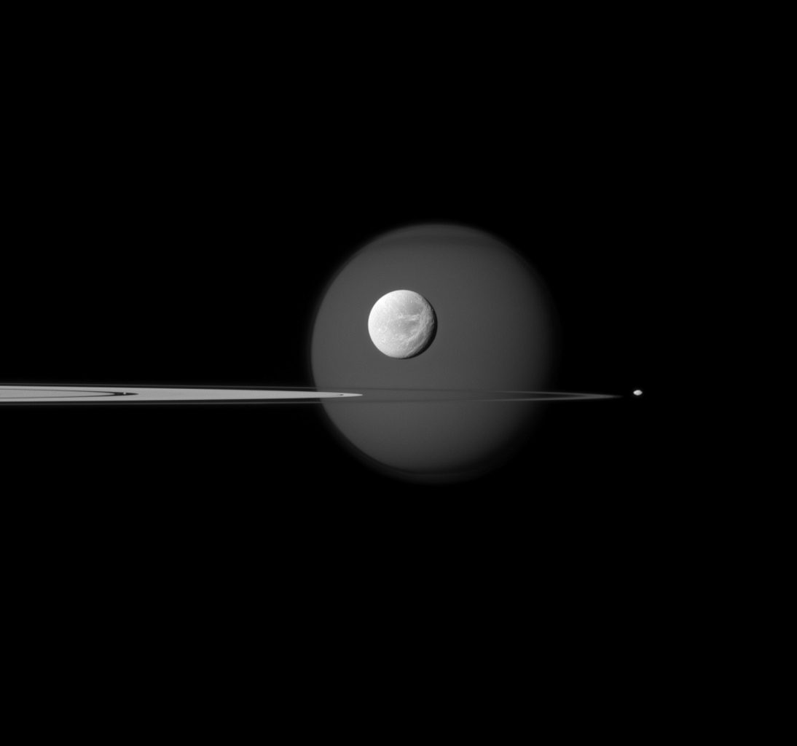
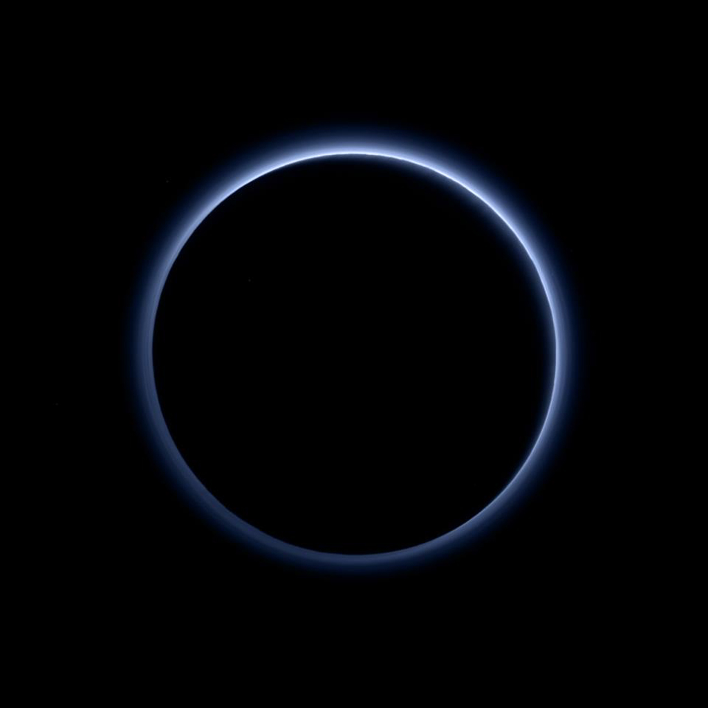
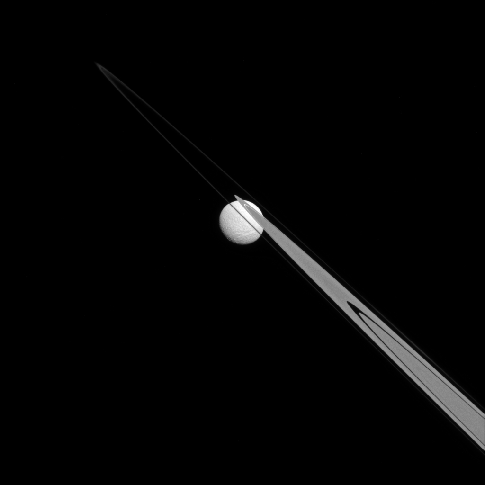

In, Around, Beyond Rings A quartet of Saturn's moons, from tiny to huge, surround and are embedded within the planet's rings in this Cassini composition.
Saturn's largest moon, Titan, is in the background of the image, and the moon's north polar hood is clearly visible. See PIA08137 to learn more about that feature on Titan (3,200 miles, or 5,150 kilometers across). Next, the wispy terrain on the trailing hemisphere of Dione (698 miles, or 1,123 kilometers across) can be seen on that moon which appears just above the rings at the center of the image. See PIA10560 and PIA06163 to learn more about Dione's wisps. Saturn's small moon Pandora (50 miles, or 81 kilometers across) orbits beyond the rings on the right of the image. Finally, Pan (17 miles, or 28 kilometers across) can be seen in the Encke Gap of the A ring on the left of the image.

Pluto's Blue Sky
Pluto's Blue Sky
Pluto's haze layer shows its blue color in this picture taken by the New Horizons Ralph / Multispectral Visible Imaging (MVIC). The high-altitude haze is thought to be similar in nature to that seen at Saturn's moon Titan. The source of both hazes likely involves sunlight - initiated chemical reactions of nitrogen and methane, leading to relatively small, soot-like particles (called tholins) that grow as they settle toward the surface.

Stuck on the Rings
Stuck on the RingsLike a drop of dew hanging on a leaf, Tethys appears to be stuck to the A and F rings from this perspective.
Tethys (660 miles, or 1,062 km across), like the ring particles, is composed primarily of ice. The gap in the A ring through which Tethys is visible is the Keeler gap, which is kept clear by the small moon Daphnis ( not visible here ).This view looks toward the Saturn-facing hemisphere of Tethys. North on Tethys is up and rotated 43 degrees to the right. The img was taken in visible light with the Cassini spacecraft narrow-angle camera on 14-6-14. The view was acquired at a distance of approximately 1.1 million miles (1.8 million kilometers) from Tethys and at a Sun - Tethys - spacecraft, or phase, angle of 22 degrees. Image scale is 7 miles (11 kilometers) per pixel.

Polar Scars
Polar ScarsIn addition to being evidence of past impacts, craters can serve another valuable scientific purpose. By counting the number of craters in an area, scientists can estimate the age of the terrain. Older surfaces, such as on Mimas (246 miles, or 396 km across), will have more craters per unit area than younger surfaces.This view looks toward the trailing hemisphere of Mimas. North on Mimas is up and rotated 4 degrees to the left. The image was taken in visible light with the Cassini spacecraft narrow-angle camera on June 5, 2012. The view was acquired at a distance of approximately 31,000 miles (50,000 kilometers) from Mimas. Image scale is 982 feet per pixel.